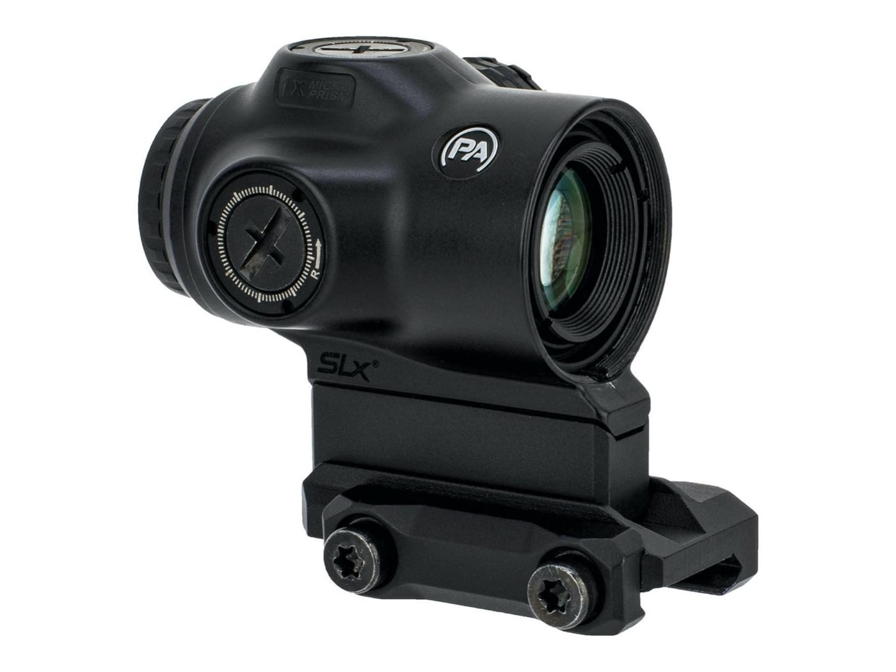
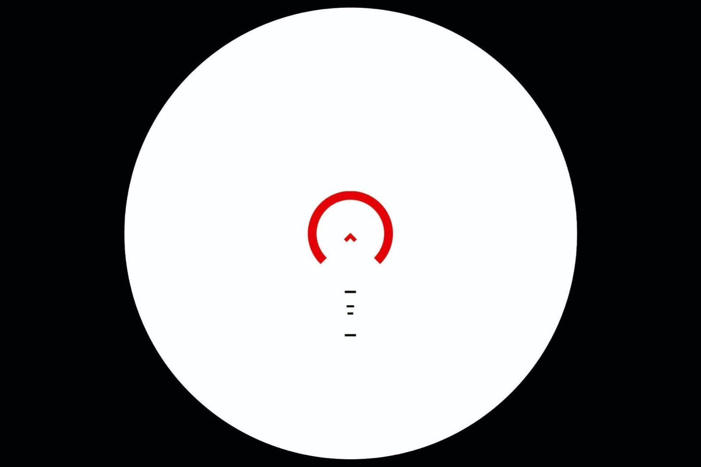

← 第 1 期（2026-10-05） / 棱镜

Primary Arms SLx 1x MicroPrism ACSS Cyclops Gen 2（红）
$379.99CAD 税前
店铺 RDSC (Red Deer AB)
库存 有货In stock
库存核实于 2026-10-05 18:06 MT（直接读取店铺页面）
去 RDSC (Red Deer AB) 购买 ↗
使用视觉效果

参数
| 类型 | 1x 棱镜 |
|---|---|
| 分划 | ACSS Cyclops Gen 2 蚀刻照明 |
| 倍率 | 1x |
| 出瞳距离 | 2–6 in（最佳3.6 in） |
| 续航 | 中档约45,000小时 (CR2032) |
| 重量 | 7.6 oz（含增高座） |
| 价格（CAD 税前） | 379.99 |
| 是否打折 | 否 |
参数来自本期周报 CSV（数据取自店铺页 / 品牌官网），没有标注的写「未标明」。
购买渠道与库存
周报原文备注：RDSC (Red Deer AB)；Marstar 同价有货